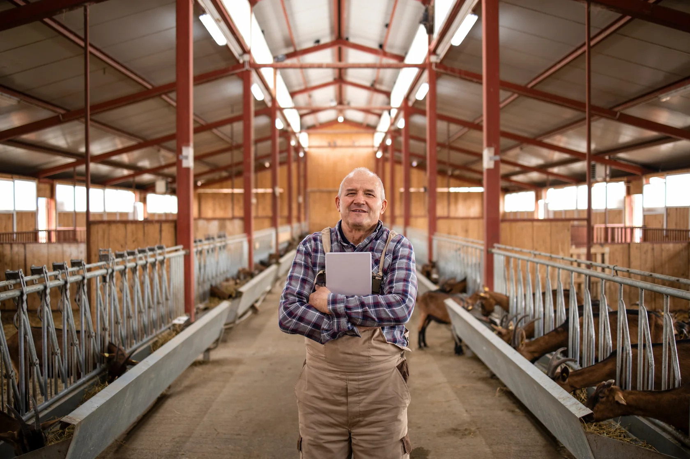
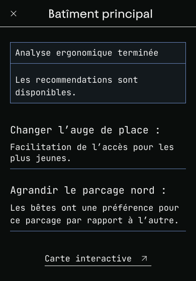
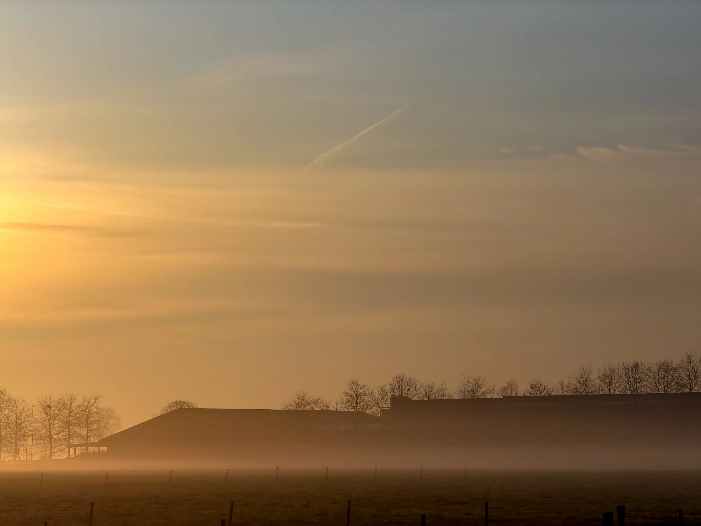

04
Tout anticipé, le froid mis à part.
Les caméras transforment l'étable en données. L'algorithme optimise l'espace. Puis vient le gel et l'éleveur passe sa journée à réparer des machines au lieu de soigner ses bêtes.

"J'ai déplacé l'auge de deux mètres comme suggéré. Le stress social a baissé, c'est réel. J'ai vu la différence sur les bêtes. Mais cet hiver, lors de moins douze degrés pendant cinq jours, les moteurs de rotation ont grillé. La condensation des vaches a créé un brouillard que l'IA a interprété comme de la fumée et l'alarme incendie s'est déclenchée à 4h du matin. J'ai passé ma journée à dégivrer des caméras au lieu de faire mon métier."
Sébastien R. — Eleveur ovins, GemblouxUne étable connue dans les moindres recoins
FarmSync cartographie l'utilisation de l'espace en continu. La caméra suit les déplacements de chaque animal et génère des heatmaps montrant où les bêtes préfèrent dormir, manger ou se confronter. L'algorithme propose alors des modifications ergonomiques précises; déplacer l'auge, redécouper les zones de repos, repositionner les points d'eau, etc.
C'est une collaboration homme-machine qui fonctionne. Sébastien en témoigne : depuis la modification suggérée, les conflits autour de l'auge ont diminué. Le stress social (mesurable) a baissé. La ferme est devenue plus douce pour les animaux et moins épuisante pour lui.

Un système pensé pour un environnement contrôlé peut-il résister aux conditions réelles de l'agriculture ?
Le gel, le brouillard et l'esclave de maintenance
Puis vient l'hiver, à moins douze degrés, les moteurs de rotation des caméras tentent de briser la glace accumulée. Ils grillent. Le système devient statique et donc, aveugle.
Plus grave, la condensation produite par la respiration de cinquante vaches crée un brouillard dense dans l'étable. L'IA, programmée pour détecter les anomalies de densité optique, interprète cette brume comme un départ de fumée. L'alarme incendie se déclenche car aucun capteurs d’humidité n’a été ajouté sur la caméra.
Sébastien, au lieu de soigner ses bêtes lors de la journée la plus froide de l'hiver, passe ses heures à dégivrer, réparer et commander des pièces. Il n'est plus éleveur. Il est devenu l'esclave de maintenance d'une infrastructure trop complexe pour son environnement.

-
Ce que FarmSync apporte
- Cartographie précise des comportements spatiaux du troupeau
- Suggestions ergonomiques basées sur des données réelles
- Réduction mesurable du stress social et des conflits
- Optimisation continue de l'espace de vie animal
-
Les problématiques
- Les caméras motorisées sont vulnérables au gel extrême
- La condensation animale génère des alertes inutiles
- La maintenance de l'infrastructure dévore le temps de l'éleveur
- La complexité technique crée une fragilité car mal pensé